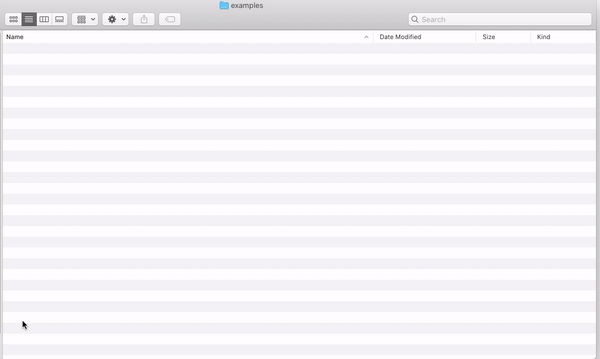

from IPython.display import IFrame
IFrame("../videos/Terminal-Keep-In-Dock.mp4", width='100%', height='400px')The Command Line
The Command Line
Before we begin learning about the programming language Python, we need to learn about the command line. The command line — also referred to as the shell, bash, or terminal — is the gateway to computational analysis. Think of it like interacting with your computer behind the scenes.
Here are some of the important things that you can do from the command line:
- Run Python scripts
- Install software and Python packages
- Work on different computers from your current computer (including work on cloud platforms such as Google Cloud or Amazon Web Services)
- Do basic text analysis
- Do simple tasks, such as renaming many files or resizing many images, faster and more efficiently
- Gain more power and flexibility over your computing experience

Note
Technically speaking, command line, shell, bash, and terminal all mean slightly different things. The Digital Humanities Research Institute provides a helpful primer on the distinctions.
The command line interface is often contrasted with the graphical user interface or GUI (pronounced gooey, like St. Louis gooey butter cake). This is the way that most people are familiar with navigating their computers.
To illustrate the difference between the command line and the GUI, consider the following example. I want to make a new folder to organize my notes for this class. So I drag my mouse cursor and click on a button that says “New Folder,” which makes a small icon of a folder appear. I title this folder “Intro-CA-Notes.” Now I want to delete this folder. So I drag and drop the folder icon into a tiny trash can icon.

This is the GUI in action. This is how we interact with our computers graphically — with visual icons, movements, and mouse clicks.
But that’s not the only way we can interact with our computers. We can do all of the above from the command line as well. Instead of dragging and dropping little folder icons, we would type in textual commands, such as mkdir Intro-CA-Notes (to make a folder or directory) and rmdir Intro-CA-Notes (to remove the directory).

Making a folder from the command line as opposed to dragging and clicking with the mouse won’t save us a ton of time. Maybe a couple of seconds at most.
But in the aggregate, with larger tasks, these seconds start to add up. Since we can automate tasks from the command line, we can transform things that would be tedious and time-consuming to do manually — such as resizing 1000 photos or combining a dozen smaller CSV files into one large file — into useful and efficient scripts.
That’s just the tip of the iceberg. From the command line, you can also run Python code, install software, or connect to a remote server or Raspberry Pi (a cheap, tiny computer where you can make Twitter bots and more). The command line offers you greater power and flexibility over your computing experience.
Where do I find the command line?
Your command line will differ depending on the operating system (OS) that you’re using. Most operating systems fall into two different families: the Unix-like family and the Microsoft Windows family. The Unix-like family includes Mac OS, Linux, Android, and Chrome.
We’re going to focus on the command line interfaces for Mac, Microsoft Windows, and Chromebooks.
Mac OS
If you’re using a Mac, you will access the command line through an application called “Terminal.” You can find Terminal under Applications -> Utilities.

Alternatively, you can find it by clicking Spotlight Search in the top right corner, typing “Terminal,” and double-clicking the application or pressing enter.
You can keep the Terminal application on your dock by right-clicking the application and selecting Options -> Keep in Dock (as shown in the video above).
When you open Terminal, you will see the name of your computer and your username followed by a dollar sign $ or %. For example, when I go to the command line, I see the prompt Melanies-MacBook-Pro:~ melaniewalsh$, as shown above. You type commands after the dollar sign $.
If you see a dollar sign $ or percentage sign % in example code in this book or elsewhere, that symbol represents where you should start typing your own code. You do not need to include the symbol in your own code. It will cause an error. It’s a common beginner’s mistake to include the dollar sign $ or another symbol, especially when consulting examples from the internet.
###  Windows OS
Windows OS
The command line for Windows users, called “Command Prompt,” is different from the command line interface for Mac users and the wider Unix-like family. The Windows Command Prompt is not as powerful as the Unix shell in certain ways.
However, beginning with Windows 7, Microsoft also introduced “PowerShell,” which acts like a more flexible and more powerful command line for Windows users. (You can read more about PowerShell in Microsoft’s official documentation).
We’re going to focus on PowerShell, as opposed to Command Prompt, for a number of reasons. One very convenient reason is that PowerShell commands have “aliases.” They go by a number of different names, including names that are used by the traditional Windows Command Prompt and by a Mac Terminal.
These aliases will conveniently allow you to learn a little about Unix and Windows commands at the same time. Since we’re mostly trying to understand how the command line functions at a broad level, this level of familiarity will suffice for now. In the future, you may want to invest more time in learning the specifics of PowerShell or the Command Prompt.

To open PowerShell, simply search for it in the Windows search bar, as shown above.
 Chromebook
Chromebook
To access the command line from a Chromebook, you first need to turn on Linux (Beta). The following instructions are taken from Google Chromebook Help.
- At the bottom right, select the time
- Select Settings
- Under “Linux (Beta),” select Turn On
- Follow the steps on the screen. Setup can take 10 minutes or more
- A terminal window opens. You can run Linux commands, install more tools using the APT package manager, and customize your shell
Command Line Cheatsheet
| Mac / Chrome / Linux | Explanation | Windows PowerShell |
|---|---|---|
cd filepath |
change directory, aka move into a different folder | cd filepath |
ls |
list the files and folders in your current directory | ls / dir / Get-ChildItem |
pwd |
show path of working directory, aka the folder that you’re in right now | pwd / cd |
touch filename |
make a new file | ni filename |
mkdir directory-name |
make a new directory, aka a folder | mkdir directory-name |
rm filename |
remove, aka delete, a file or directory | rm filename / del filename |
cp original-filename copied-filename |
copy a file or directory | cp / copy |
mv original-filename new-filename |
move or rename a file or directory | move original-filename new-filename / ren original-filename new-filename |
cat filename |
show all the contents of a file | cat filename / type filename |
less filename |
show snippet of a file that allows you to scroll through the entire thing | more filename |
head filename |
show the first 10 lines of a file (change number of lines by adding -*a number* flag, e.g. head -100) |
gc filename -head 10 |
tail filename |
show the last 10 lines of a file (change number of lines by adding -*a number* flag, e.g. tail -100) |
gc filename -tail 10 |
wc -w -l filename |
show how many words or lines in a file | gc filename | Measure-Object -Word –Line |
man command |
show the manual, aka the documentation that tells you what a particular command does | help command |
echo |
print text to the command line | echo |
grep “search term” filename or directory-name |
search for lines that include search term in file | findstr “search term” filename |
curl -O url |
get, a file from the web | wget url -OutFile new-filename |
Working with Files and Texts
There’s a lot of basic text analysis that you can do just from the command line.
Download a text file from the web
| Mac / Chrome / Linux | Explanation | Windows PowerShell |
|---|---|---|
curl -O url |
get, a file from the web | wget url -OutFile new-filename |
You can download a text file from the web by using the command curl or wget with the appropriate web address. Let’s see if we can download Charlotte Perkins Gilman’s short story “The Yellow Wallpaper.”
We’re going to search for the story through Project Gutenberg, an amazing resource that hosts tens of thousands of free texts in the public domain (which means lots of great literary and historical texts published before 1928).
If you haven’t done so already, move into the “very-interesting-folder” directory:
%cd very-interesting-folder/If you’re using a Mac, you can download a file like so:
!curl -O https://www.gutenberg.org/files/1952/1952-0.txt % Total % Received % Xferd Average Speed Time Time Time Current
Dload Upload Total Spent Left Speed
100 52571 100 52571 0 0 3779 0 0:00:13 0:00:13 --:--:-- 11286If you’re using a Mac and have wget installed, or you’re working from Windows, you can use wget:
!wget https://www.gutenberg.org/files/1952/1952-0.txt--2020-01-23 00:05:01-- http://www.gutenberg.org/files/1952/1952-0.txt
Resolving www.gutenberg.org (www.gutenberg.org)... 152.19.134.47
Connecting to www.gutenberg.org (www.gutenberg.org)|152.19.134.47|:80... connected.
HTTP request sent, awaiting response... 200 OK
Length: 51185 (50K) [text/plain]
Saving to: ‘1952-0.txt’
1952-0.txt 100%[===================>] 49.99K --.-KB/s in 0.1s
2020-01-23 00:05:02 (387 KB/s) - ‘1952-0.txt’ saved [51185/51185]
#PowerShell C:\Users> wget http://www.gutenberg.org/files/1952/1952-0.txt -OutFile The-Yellow-Wallpaper.txtNow let’s examine what’s inside the directory.
%ls1952-0.txt a-troubling-fact.txt an-interesting-fact.txtSweet! We have a new file.
Rename a file
| Mac / Chrome / Linux | Explanation | Windows PowerShell |
|---|---|---|
mv original-filename new-filename |
move or rename a file or directory | move original-filename new-filename / ren original-filename new-filename |
Let’s rename the file something more readable.
%mv 1952-0.txt The-Yellow-Wallpaper.txtNow let’s examine all the files in this directory again.
%lsThe-Yellow-Wallpaper.txt a-troubling-fact.txt an-interesting-fact.txtWe can see that the file has been correctly renamed. Woo!
Check file sizes, lengths, and word counts
| Mac / Chrome / Linux | Explanation | Windows PowerShell |
|---|---|---|
ls |
list the files and folders in your current directory | ls / dir / Get-ChildItem |
wc -w -l filename |
show how many words or lines in a file | gc filename | Measure-Object -Word –Line |
Combining the -lh flag with the ls command will show you the long format version (-l) of each file with the file sizes formatted in a human readable (-h) way. The long format version of the file will include the file’s permissions, size, and date that it was last modified.
%ls -lhtotal 120
-rw-r--r-- 1 melwalsh staff 51K Sep 13 11:07 The-Yellow-Wallpaper.txt
-rw-r--r-- 1 melwalsh staff 661B Aug 30 15:43 a-troubling-fact.txt
-rw-r--r-- 1 melwalsh staff 214B Aug 30 15:43 an-interesting-fact.txtThe file sizes can be found in the fourth column. The file The-Yellow-Wallpaper.txt is shown as 50K or 50 Kilboytes. For a helpful breakdown of Bytes vs Kilobytes vs Megabytes vs Gigabytes, see Stanford professor Ashley Taylor’s CS101 course website.
| Abbreviation | Size |
|---|---|
| B | Bytes |
| K | Kilobytes |
| M | Megabytes |
| G | Gigabytes |
Now let’s check how many words are in “The Yellow Wallpaper.” Combining the -w flag with the wc command will return the number of words in a file.
!wc -w The-Yellow-Wallpaper.txt 9153 The-Yellow-Wallpaper.txt#PowerShell C:\Users> gc The-Yellow-Wallpaper.txt | Measure-Object –WordLet’s check how many lines are in “The Yellow Wallpaper.” Combining the -l flag with the wc command will return the number of words in a file.
!wc -l The-Yellow-Wallpaper.txt 1225 The-Yellow-Wallpaper.txt#PowerShell C:\Users> gc The-Yellow-Wallpaper.txt | Measure-Object –LineDisplay the contents of a file
| Mac / Chrome / Linux | Explanation | Windows PowerShell |
|---|---|---|
cat filename |
show all the contents of a file | cat filename / type filename |
less filename |
show snippet of a file that allows you to scroll through the entire thing | more filename |
head filename |
show the first 10 lines of a file (change number of lines by adding -*a number* flag, e.g. head -100) |
gc filename -head 10 |
tail filename |
show the last 10 lines of a file (change number of lines by adding -*a number* flag, e.g. tail -100) |
gc filename -tail 10 |
The cat command prints the whole file to your command line.
!cat The-Yellow-Wallpaper.txtThe Project Gutenberg eBook of The Yellow Wallpaper, by Charlotte Perkins Gilman
This eBook is for the use of anyone anywhere in the United States and
most other parts of the world at no cost and with almost no restrictions
whatsoever. You may copy it, give it away or re-use it under the terms
of the Project Gutenberg License included with this eBook or online at
www.gutenberg.org. If you are not located in the United States, you
will have to check the laws of the country where you are located before
using this eBook.
Title: The Yellow Wallpaper
Author: Charlotte Perkins Gilman
Release Date: November, 1999 [eBook #1952]
[Most recently updated: January 4, 2021]
Language: English
Character set encoding: UTF-8
Produced by: An Anonymous Volunteer and David Widger
*** START OF THE PROJECT GUTENBERG EBOOK THE YELLOW WALLPAPER ***
The Yellow Wallpaper
By Charlotte Perkins Gilman
It is very seldom that mere ordinary people like John and myself secure
ancestral halls for the summer.
A colonial mansion, a hereditary estate, I would say a haunted house,
and reach the height of romantic felicity—but that would be asking too
much of fate!
Still I will proudly declare that there is something queer about it.
Else, why should it be let so cheaply? And why have stood so long
untenanted?
John laughs at me, of course, but one expects that in marriage.
John is practical in the extreme. He has no patience with faith, an
intense horror of superstition, and he scoffs openly at any talk of
things not to be felt and seen and put down in figures.
John is a physician, and perhaps—(I would not say it to a living soul,
of course, but this is dead paper and a great relief to my
mind)—perhaps that is one reason I do not get well faster.
You see, he does not believe I am sick!
And what can one do?
If a physician of high standing, and one’s own husband, assures friends
and relatives that there is really nothing the matter with one but
temporary nervous depression—a slight hysterical tendency—what is one
to do?
My brother is also a physician, and also of high standing, and he says
the same thing.
So I take phosphates or phosphites—whichever it is, and tonics, and
journeys, and air, and exercise, and am absolutely forbidden to “work”
until I am well again.
Personally, I disagree with their ideas.
Personally, I believe that congenial work, with excitement and change,
would do me good.
But what is one to do?
I did write for a while in spite of them; but it does exhaust me a good
deal—having to be so sly about it, or else meet with heavy opposition.
I sometimes fancy that in my condition if I had less opposition and
more society and stimulus—but John says the very worst thing I can do
is to think about my condition, and I confess it always makes me feel
bad.
So I will let it alone and talk about the house.
The most beautiful place! It is quite alone, standing well back from
the road, quite three miles from the village. It makes me think of
English places that you read about, for there are hedges and walls and
gates that lock, and lots of separate little houses for the gardeners
and people.
There is a delicious garden! I never saw such a garden—large and shady,
full of box-bordered paths, and lined with long grape-covered arbors
with seats under them.
There were greenhouses, too, but they are all broken now.
There was some legal trouble, I believe, something about the heirs and
co-heirs; anyhow, the place has been empty for years.
That spoils my ghostliness, I am afraid; but I don’t care—there is
something strange about the house—I can feel it.
I even said so to John one moonlight evening, but he said what I felt
was a draught, and shut the window.
I get unreasonably angry with John sometimes. I’m sure I never used to
be so sensitive. I think it is due to this nervous condition.
But John says if I feel so I shall neglect proper self-control; so I
take pains to control myself,—before him, at least,—and that makes me
very tired.
I don’t like our room a bit. I wanted one downstairs that opened on the
piazza and had roses all over the window, and such pretty old-fashioned
chintz hangings! but John would not hear of it.
He said there was only one window and not room for two beds, and no
near room for him if he took another.
He is very careful and loving, and hardly lets me stir without special
direction.
I have a schedule prescription for each hour in the day; he takes all
care from me, and so I feel basely ungrateful not to value it more.
He said we came here solely on my account, that I was to have perfect
rest and all the air I could get. “Your exercise depends on your
strength, my dear,” said he, “and your food somewhat on your appetite;
but air you can absorb all the time.” So we took the nursery, at the
top of the house.
It is a big, airy room, the whole floor nearly, with windows that look
all ways, and air and sunshine galore. It was nursery first and then
playground and gymnasium, I should judge; for the windows are barred
for little children, and there are rings and things in the walls.
The paint and paper look as if a boys’ school had used it. It is
stripped off—the paper—in great patches all around the head of my bed,
about as far as I can reach, and in a great place on the other side of
the room low down. I never saw a worse paper in my life.
One of those sprawling flamboyant patterns committing every artistic
sin.
It is dull enough to confuse the eye in following, pronounced enough to
constantly irritate, and provoke study, and when you follow the lame,
uncertain curves for a little distance they suddenly commit
suicide—plunge off at outrageous angles, destroy themselves in
unheard-of contradictions.
The color is repellant, almost revolting; a smouldering, unclean
yellow, strangely faded by the slow-turning sunlight.
It is a dull yet lurid orange in some places, a sickly sulphur tint in
others.
No wonder the children hated it! I should hate it myself if I had to
live in this room long.
There comes John, and I must put this away,—he hates to have me write a
word.
We have been here two weeks, and I haven’t felt like writing before,
since that first day.
I am sitting by the window now, up in this atrocious nursery, and there
is nothing to hinder my writing as much as I please, save lack of
strength.
John is away all day, and even some nights when his cases are serious.
I am glad my case is not serious!
But these nervous troubles are dreadfully depressing.
John does not know how much I really suffer. He knows there is no
reason to suffer, and that satisfies him.
Of course it is only nervousness. It does weigh on me so not to do my
duty in any way!
I meant to be such a help to John, such a real rest and comfort, and
here I am a comparative burden already!
Nobody would believe what an effort it is to do what little I am
able—to dress and entertain, and order things.
It is fortunate Mary is so good with the baby. Such a dear baby!
And yet I cannot be with him, it makes me so nervous.
I suppose John never was nervous in his life. He laughs at me so about
this wallpaper!
At first he meant to repaper the room, but afterwards he said that I
was letting it get the better of me, and that nothing was worse for a
nervous patient than to give way to such fancies.
He said that after the wallpaper was changed it would be the heavy
bedstead, and then the barred windows, and then that gate at the head
of the stairs, and so on.
“You know the place is doing you good,” he said, “and really, dear, I
don’t care to renovate the house just for a three months’ rental.”
“Then do let us go downstairs,” I said, “there are such pretty rooms
there.”
Then he took me in his arms and called me a blessed little goose, and
said he would go down cellar if I wished, and have it whitewashed into
the bargain.
But he is right enough about the beds and windows and things.
It is as airy and comfortable a room as any one need wish, and, of
course, I would not be so silly as to make him uncomfortable just for a
whim.
I’m really getting quite fond of the big room, all but that horrid
paper.
Out of one window I can see the garden, those mysterious deep-shaded
arbors, the riotous old-fashioned flowers, and bushes and gnarly trees.
Out of another I get a lovely view of the bay and a little private
wharf belonging to the estate. There is a beautiful shaded lane that
runs down there from the house. I always fancy I see people walking in
these numerous paths and arbors, but John has cautioned me not to give
way to fancy in the least. He says that with my imaginative power and
habit of story-making a nervous weakness like mine is sure to lead to
all manner of excited fancies, and that I ought to use my will and good
sense to check the tendency. So I try.
I think sometimes that if I were only well enough to write a little it
would relieve the press of ideas and rest me.
But I find I get pretty tired when I try.
It is so discouraging not to have any advice and companionship about my
work. When I get really well John says we will ask Cousin Henry and
Julia down for a long visit; but he says he would as soon put
fire-works in my pillow-case as to let me have those stimulating people
about now.
I wish I could get well faster.
But I must not think about that. This paper looks to me as if it knew
what a vicious influence it had!
There is a recurrent spot where the pattern lolls like a broken neck
and two bulbous eyes stare at you upside-down.
I get positively angry with the impertinence of it and the
everlastingness. Up and down and sideways they crawl, and those absurd,
unblinking eyes are everywhere. There is one place where two breadths
didn’t match, and the eyes go all up and down the line, one a little
higher than the other.
I never saw so much expression in an inanimate thing before, and we all
know how much expression they have! I used to lie awake as a child and
get more entertainment and terror out of blank walls and plain
furniture than most children could find in a toy-store.
I remember what a kindly wink the knobs of our big old bureau used to
have, and there was one chair that always seemed like a strong friend.
I used to feel that if any of the other things looked too fierce I
could always hop into that chair and be safe.
The furniture in this room is no worse than inharmonious, however, for
we had to bring it all from downstairs. I suppose when this was used as
a playroom they had to take the nursery things out, and no wonder! I
never saw such ravages as the children have made here.
The wallpaper, as I said before, is torn off in spots, and it sticketh
closer than a brother—they must have had perseverance as well as
hatred.
Then the floor is scratched and gouged and splintered, the plaster
itself is dug out here and there, and this great heavy bed, which is
all we found in the room, looks as if it had been through the wars.
But I don’t mind it a bit—only the paper.
There comes John’s sister. Such a dear girl as she is, and so careful
of me! I must not let her find me writing.
She is a perfect, and enthusiastic housekeeper, and hopes for no better
profession. I verily believe she thinks it is the writing which made me
sick!
But I can write when she is out, and see her a long way off from these
windows.
There is one that commands the road, a lovely, shaded, winding road,
and one that just looks off over the country. A lovely country, too,
full of great elms and velvet meadows.
This wallpaper has a kind of sub-pattern in a different shade, a
particularly irritating one, for you can only see it in certain lights,
and not clearly then.
But in the places where it isn’t faded, and where the sun is just so, I
can see a strange, provoking, formless sort of figure, that seems to
sulk about behind that silly and conspicuous front design.
There’s sister on the stairs!
Well, the Fourth of July is over! The people are gone and I am tired
out. John thought it might do me good to see a little company, so we
just had mother and Nellie and the children down for a week.
Of course I didn’t do a thing. Jennie sees to everything now.
But it tired me all the same.
John says if I don’t pick up faster he shall send me to Weir Mitchell
in the fall.
But I don’t want to go there at all. I had a friend who was in his
hands once, and she says he is just like John and my brother, only more
so!
Besides, it is such an undertaking to go so far.
I don’t feel as if it was worth while to turn my hand over for
anything, and I’m getting dreadfully fretful and querulous.
I cry at nothing, and cry most of the time.
Of course I don’t when John is here, or anybody else, but when I am
alone.
And I am alone a good deal just now. John is kept in town very often by
serious cases, and Jennie is good and lets me alone when I want her to.
So I walk a little in the garden or down that lovely lane, sit on the
porch under the roses, and lie down up here a good deal.
I’m getting really fond of the room in spite of the wallpaper. Perhaps
because of the wallpaper.
It dwells in my mind so!
I lie here on this great immovable bed—it is nailed down, I believe—and
follow that pattern about by the hour. It is as good as gymnastics, I
assure you. I start, we’ll say, at the bottom, down in the corner over
there where it has not been touched, and I determine for the thousandth
time that I will follow that pointless pattern to some sort of a
conclusion.
I know a little of the principle of design, and I know this thing was
not arranged on any laws of radiation, or alternation, or repetition,
or symmetry, or anything else that I ever heard of.
It is repeated, of course, by the breadths, but not otherwise.
Looked at in one way each breadth stands alone, the bloated curves and
flourishes—a kind of “debased Romanesque” with delirium tremens—go
waddling up and down in isolated columns of fatuity.
But, on the other hand, they connect diagonally, and the sprawling
outlines run off in great slanting waves of optic horror, like a lot of
wallowing seaweeds in full chase.
The whole thing goes horizontally, too, at least it seems so, and I
exhaust myself in trying to distinguish the order of its going in that
direction.
They have used a horizontal breadth for a frieze, and that adds
wonderfully to the confusion.
There is one end of the room where it is almost intact, and there, when
the cross-lights fade and the low sun shines directly upon it, I can
almost fancy radiation after all,—the interminable grotesques seem to
form around a common centre and rush off in headlong plunges of equal
distraction.
It makes me tired to follow it. I will take a nap, I guess.
I don’t know why I should write this.
I don’t want to.
I don’t feel able.
And I know John would think it absurd. But I must say what I feel and
think in some way—it is such a relief!
But the effort is getting to be greater than the relief.
Half the time now I am awfully lazy, and lie down ever so much.
John says I musn’t lose my strength, and has me take cod-liver oil and
lots of tonics and things, to say nothing of ale and wine and rare
meat.
Dear John! He loves me very dearly, and hates to have me sick. I tried
to have a real earnest reasonable talk with him the other day, and tell
him how I wish he would let me go and make a visit to Cousin Henry and
Julia.
But he said I wasn’t able to go, nor able to stand it after I got
there; and I did not make out a very good case for myself, for I was
crying before I had finished.
It is getting to be a great effort for me to think straight. Just this
nervous weakness, I suppose.
And dear John gathered me up in his arms, and just carried me upstairs
and laid me on the bed, and sat by me and read to me till it tired my
head.
He said I was his darling and his comfort and all he had, and that I
must take care of myself for his sake, and keep well.
He says no one but myself can help me out of it, that I must use my
will and self-control and not let any silly fancies run away with me.
There’s one comfort, the baby is well and happy, and does not have to
occupy this nursery with the horrid wallpaper.
If we had not used it that blessed child would have! What a fortunate
escape! Why, I wouldn’t have a child of mine, an impressionable little
thing, live in such a room for worlds.
I never thought of it before, but it is lucky that John kept me here
after all. I can stand it so much easier than a baby, you see.
Of course I never mention it to them any more,—I am too wise,—but I
keep watch of it all the same.
There are things in that paper that nobody knows but me, or ever will.
Behind that outside pattern the dim shapes get clearer every day.
It is always the same shape, only very numerous.
And it is like a woman stooping down and creeping about behind that
pattern. I don’t like it a bit. I wonder—I begin to think—I wish John
would take me away from here!
It is so hard to talk with John about my case, because he is so wise,
and because he loves me so.
But I tried it last night.
It was moonlight. The moon shines in all around, just as the sun does.
I hate to see it sometimes, it creeps so slowly, and always comes in by
one window or another.
John was asleep and I hated to waken him, so I kept still and watched
the moonlight on that undulating wallpaper till I felt creepy.
The faint figure behind seemed to shake the pattern, just as if she
wanted to get out.
I got up softly and went to feel and see if the paper did move, and
when I came back John was awake.
“What is it, little girl?” he said. “Don’t go walking about like
that—you’ll get cold.”
I thought it was a good time to talk, so I told him that I really was
not gaining here, and that I wished he would take me away.
“Why darling!” said he, “our lease will be up in three weeks, and I
can’t see how to leave before.
“The repairs are not done at home, and I cannot possibly leave town
just now. Of course if you were in any danger I could and would, but
you really are better, dear, whether you can see it or not. I am a
doctor, dear, and I know. You are gaining flesh and color, your
appetite is better. I feel really much easier about you.”
“I don’t weigh a bit more,” said I, “nor as much; and my appetite may
be better in the evening, when you are here, but it is worse in the
morning when you are away.”
“Bless her little heart!” said he with a big hug; “she shall be as sick
as she pleases! But now let’s improve the shining hours by going to
sleep, and talk about it in the morning!”
“And you won’t go away?” I asked gloomily.
“Why, how can I, dear? It is only three weeks more and then we will
take a nice little trip of a few days while Jennie is getting the house
ready. Really, dear, you are better!”
“Better in body perhaps”—I began, and stopped short, for he sat up
straight and looked at me with such a stern, reproachful look that I
could not say another word.
“My darling,” said he, “I beg of you, for my sake and for our child’s
sake, as well as for your own, that you will never for one instant let
that idea enter your mind! There is nothing so dangerous, so
fascinating, to a temperament like yours. It is a false and foolish
fancy. Can you not trust me as a physician when I tell you so?”
So of course I said no more on that score, and we went to sleep before
long. He thought I was asleep first, but I wasn’t,—I lay there for
hours trying to decide whether that front pattern and the back pattern
really did move together or separately.
On a pattern like this, by daylight, there is a lack of sequence, a
defiance of law, that is a constant irritant to a normal mind.
The color is hideous enough, and unreliable enough, and infuriating
enough, but the pattern is torturing.
You think you have mastered it, but just as you get well under way in
following, it turns a back somersault and there you are. It slaps you
in the face, knocks you down, and tramples upon you. It is like a bad
dream.
The outside pattern is a florid arabesque, reminding one of a fungus.
If you can imagine a toadstool in joints, an interminable string of
toadstools, budding and sprouting in endless convolutions,—why, that is
something like it.
That is, sometimes!
There is one marked peculiarity about this paper, a thing nobody seems
to notice but myself, and that is that it changes as the light changes.
When the sun shoots in through the east window—I always watch for that
first long, straight ray—it changes so quickly that I never can quite
believe it.
That is why I watch it always.
By moonlight—the moon shines in all night when there is a moon—I
wouldn’t know it was the same paper.
At night in any kind of light, in twilight, candlelight, lamplight, and
worst of all by moonlight, it becomes bars! The outside pattern I mean,
and the woman behind it is as plain as can be.
I didn’t realize for a long time what the thing was that showed
behind,—that dim sub-pattern,—but now I am quite sure it is a woman.
By daylight she is subdued, quiet. I fancy it is the pattern that keeps
her so still. It is so puzzling. It keeps me quiet by the hour.
I lie down ever so much now. John says it is good for me, and to sleep
all I can.
Indeed, he started the habit by making me lie down for an hour after
each meal.
It is a very bad habit, I am convinced, for, you see, I don’t sleep.
And that cultivates deceit, for I don’t tell them I’m awake,—oh, no!
The fact is, I am getting a little afraid of John.
He seems very queer sometimes, and even Jennie has an inexplicable
look.
It strikes me occasionally, just as a scientific hypothesis, that
perhaps it is the paper!
I have watched John when he did not know I was looking, and come into
the room suddenly on the most innocent excuses, and I’ve caught him
several times looking at the paper! And Jennie too. I caught Jennie
with her hand on it once.
She didn’t know I was in the room, and when I asked her in a quiet, a
very quiet voice, with the most restrained manner possible, what she
was doing with the paper she turned around as if she had been caught
stealing, and looked quite angry—asked me why I should frighten her so!
Then she said that the paper stained everything it touched, that she
had found yellow smooches on all my clothes and John’s, and she wished
we would be more careful!
Did not that sound innocent? But I know she was studying that pattern,
and I am determined that nobody shall find it out but myself!
Life is very much more exciting now than it used to be. You see I have
something more to expect, to look forward to, to watch. I really do eat
better, and am more quiet than I was.
John is so pleased to see me improve! He laughed a little the other
day, and said I seemed to be flourishing in spite of my wallpaper.
I turned it off with a laugh. I had no intention of telling him it was
because of the wallpaper—he would make fun of me. He might even want to
take me away.
I don’t want to leave now until I have found it out. There is a week
more, and I think that will be enough.
I’m feeling ever so much better! I don’t sleep much at night, for it is
so interesting to watch developments; but I sleep a good deal in the
daytime.
In the daytime it is tiresome and perplexing.
There are always new shoots on the fungus, and new shades of yellow all
over it. I cannot keep count of them, though I have tried
conscientiously.
It is the strangest yellow, that wallpaper! It makes me think of all
the yellow things I ever saw—not beautiful ones like buttercups, but
old foul, bad yellow things.
But there is something else about that paper—the smell! I noticed it
the moment we came into the room, but with so much air and sun it was
not bad. Now we have had a week of fog and rain, and whether the
windows are open or not, the smell is here.
It creeps all over the house.
I find it hovering in the dining-room, skulking in the parlor, hiding
in the hall, lying in wait for me on the stairs.
It gets into my hair.
Even when I go to ride, if I turn my head suddenly and surprise
it—there is that smell!
Such a peculiar odor, too! I have spent hours in trying to analyze it,
to find what it smelled like.
It is not bad—at first, and very gentle, but quite the subtlest, most
enduring odor I ever met.
In this damp weather it is awful. I wake up in the night and find it
hanging over me.
It used to disturb me at first. I thought seriously of burning the
house—to reach the smell.
But now I am used to it. The only thing I can think of that it is like
is the color of the paper! A yellow smell.
There is a very funny mark on this wall, low down, near the mopboard. A
streak that runs round the room. It goes behind every piece of
furniture, except the bed, a long, straight, even smooch, as if it had
been rubbed over and over.
I wonder how it was done and who did it, and what they did it for.
Round and round and round—round and round and round—it makes me dizzy!
I really have discovered something at last.
Through watching so much at night, when it changes so, I have finally
found out.
The front pattern does move—and no wonder! The woman behind shakes it!
Sometimes I think there are a great many women behind, and sometimes
only one, and she crawls around fast, and her crawling shakes it all
over.
Then in the very bright spots she keeps still, and in the very shady
spots she just takes hold of the bars and shakes them hard.
And she is all the time trying to climb through. But nobody could climb
through that pattern—it strangles so; I think that is why it has so
many heads.
They get through, and then the pattern strangles them off and turns
them upside-down, and makes their eyes white!
If those heads were covered or taken off it would not be half so bad.
I think that woman gets out in the daytime!
And I’ll tell you why—privately—I’ve seen her!
I can see her out of every one of my windows!
It is the same woman, I know, for she is always creeping, and most
women do not creep by daylight.
I see her on that long shaded lane, creeping up and down. I see her in
those dark grape arbors, creeping all around the garden.
I see her on that long road under the trees, creeping along, and when a
carriage comes she hides under the blackberry vines.
I don’t blame her a bit. It must be very humiliating to be caught
creeping by daylight!
I always lock the door when I creep by daylight. I can’t do it at
night, for I know John would suspect something at once.
And John is so queer now, that I don’t want to irritate him. I wish he
would take another room! Besides, I don’t want anybody to get that
woman out at night but myself.
I often wonder if I could see her out of all the windows at once.
But, turn as fast as I can, I can only see out of one at one time.
And though I always see her she may be able to creep faster than I can
turn!
I have watched her sometimes away off in the open country, creeping as
fast as a cloud shadow in a high wind.
If only that top pattern could be gotten off from the under one! I mean
to try it, little by little.
I have found out another funny thing, but I shan’t tell it this time!
It does not do to trust people too much.
There are only two more days to get this paper off, and I believe John
is beginning to notice. I don’t like the look in his eyes.
And I heard him ask Jennie a lot of professional questions about me.
She had a very good report to give.
She said I slept a good deal in the daytime.
John knows I don’t sleep very well at night, for all I’m so quiet!
He asked me all sorts of questions, too, and pretended to be very
loving and kind.
As if I couldn’t see through him!
Still, I don’t wonder he acts so, sleeping under this paper for three
months.
It only interests me, but I feel sure John and Jennie are secretly
affected by it.
Hurrah! This is the last day, but it is enough. John is to stay in town
over night, and won’t be out until this evening.
Jennie wanted to sleep with me—the sly thing! but I told her I should
undoubtedly rest better for a night all alone.
That was clever, for really I wasn’t alone a bit! As soon as it was
moonlight, and that poor thing began to crawl and shake the pattern, I
got up and ran to help her.
I pulled and she shook, I shook and she pulled, and before morning we
had peeled off yards of that paper.
A strip about as high as my head and half around the room.
And then when the sun came and that awful pattern began to laugh at me
I declared I would finish it to-day!
We go away to-morrow, and they are moving all my furniture down again
to leave things as they were before.
Jennie looked at the wall in amazement, but I told her merrily that I
did it out of pure spite at the vicious thing.
She laughed and said she wouldn’t mind doing it herself, but I must not
get tired.
How she betrayed herself that time!
But I am here, and no person touches this paper but me—not alive!
She tried to get me out of the room—it was too patent! But I said it
was so quiet and empty and clean now that I believed I would lie down
again and sleep all I could; and not to wake me even for dinner—I would
call when I woke.
So now she is gone, and the servants are gone, and the things are gone,
and there is nothing left but that great bedstead nailed down, with the
canvas mattress we found on it.
We shall sleep downstairs to-night, and take the boat home to-morrow.
I quite enjoy the room, now it is bare again.
How those children did tear about here!
This bedstead is fairly gnawed!
But I must get to work.
I have locked the door and thrown the key down into the front path.
I don’t want to go out, and I don’t want to have anybody come in, till
John comes.
I want to astonish him.
I’ve got a rope up here that even Jennie did not find. If that woman
does get out, and tries to get away, I can tie her!
But I forgot I could not reach far without anything to stand on!
This bed will not move!
I tried to lift and push it until I was lame, and then I got so angry I
bit off a little piece at one corner—but it hurt my teeth.
Then I peeled off all the paper I could reach standing on the floor. It
sticks horribly and the pattern just enjoys it! All those strangled
heads and bulbous eyes and waddling fungus growths just shriek with
derision!
I am getting angry enough to do something desperate. To jump out of the
window would be admirable exercise, but the bars are too strong even to
try.
Besides I wouldn’t do it. Of course not. I know well enough that a step
like that is improper and might be misconstrued.
I don’t like to look out of the windows even—there are so many of those
creeping women, and they creep so fast.
I wonder if they all come out of that wallpaper as I did?
But I am securely fastened now by my well-hidden rope—you don’t get me
out in the road there!
I suppose I shall have to get back behind the pattern when it comes
night, and that is hard!
It is so pleasant to be out in this great room and creep around as I
please!
I don’t want to go outside. I won’t, even if Jennie asks me to.
For outside you have to creep on the ground, and everything is green
instead of yellow.
But here I can creep smoothly on the floor, and my shoulder just fits
in that long smooch around the wall, so I cannot lose my way.
Why, there’s John at the door!
It is no use, young man, you can’t open it!
How he does call and pound!
Now he’s crying for an axe.
It would be a shame to break down that beautiful door!
“John dear!” said I in the gentlest voice, “the key is down by the
front steps, under a plantain leaf!”
That silenced him for a few moments.
Then he said—very quietly indeed, “Open the door, my darling!”
“I can’t,” said I. “The key is down by the front door under a plantain
leaf!”
And then I said it again, several times, very gently and slowly, and
said it so often that he had to go and see, and he got it, of course,
and came in. He stopped short by the door.
“What is the matter?” he cried. “For God’s sake, what are you doing!”
I kept on creeping just the same, but I looked at him over my shoulder.
“I’ve got out at last,” said I, “in spite of you and Jane! And I’ve
pulled off most of the paper, so you can’t put me back!”
Now why should that man have fainted? But he did, and right across my
path by the wall, so that I had to creep over him every time!
*** END OF THE PROJECT GUTENBERG EBOOK THE YELLOW WALLPAPER ***
***** This file should be named 1952-0.txt or 1952-0.zip *****
This and all associated files of various formats will be found in:
https://www.gutenberg.org/1/9/5/1952/
Updated editions will replace the previous one--the old editions will
be renamed.
Creating the works from print editions not protected by U.S. copyright
law means that no one owns a United States copyright in these works,
so the Foundation (and you!) can copy and distribute it in the
United States without permission and without paying copyright
royalties. Special rules, set forth in the General Terms of Use part
of this license, apply to copying and distributing Project
Gutenberg-tm electronic works to protect the PROJECT GUTENBERG-tm
concept and trademark. Project Gutenberg is a registered trademark,
and may not be used if you charge for an eBook, except by following
the terms of the trademark license, including paying royalties for use
of the Project Gutenberg trademark. If you do not charge anything for
copies of this eBook, complying with the trademark license is very
easy. You may use this eBook for nearly any purpose such as creation
of derivative works, reports, performances and research. Project
Gutenberg eBooks may be modified and printed and given away--you may
do practically ANYTHING in the United States with eBooks not protected
by U.S. copyright law. Redistribution is subject to the trademark
license, especially commercial redistribution.
START: FULL LICENSE
THE FULL PROJECT GUTENBERG LICENSE
PLEASE READ THIS BEFORE YOU DISTRIBUTE OR USE THIS WORK
To protect the Project Gutenberg-tm mission of promoting the free
distribution of electronic works, by using or distributing this work
(or any other work associated in any way with the phrase "Project
Gutenberg"), you agree to comply with all the terms of the Full
Project Gutenberg-tm License available with this file or online at
www.gutenberg.org/license.
Section 1. General Terms of Use and Redistributing Project
Gutenberg-tm electronic works
1.A. By reading or using any part of this Project Gutenberg-tm
electronic work, you indicate that you have read, understand, agree to
and accept all the terms of this license and intellectual property
(trademark/copyright) agreement. If you do not agree to abide by all
the terms of this agreement, you must cease using and return or
destroy all copies of Project Gutenberg-tm electronic works in your
possession. If you paid a fee for obtaining a copy of or access to a
Project Gutenberg-tm electronic work and you do not agree to be bound
by the terms of this agreement, you may obtain a refund from the
person or entity to whom you paid the fee as set forth in paragraph
1.E.8.
1.B. "Project Gutenberg" is a registered trademark. It may only be
used on or associated in any way with an electronic work by people who
agree to be bound by the terms of this agreement. There are a few
things that you can do with most Project Gutenberg-tm electronic works
even without complying with the full terms of this agreement. See
paragraph 1.C below. There are a lot of things you can do with Project
Gutenberg-tm electronic works if you follow the terms of this
agreement and help preserve free future access to Project Gutenberg-tm
electronic works. See paragraph 1.E below.
1.C. The Project Gutenberg Literary Archive Foundation ("the
Foundation" or PGLAF), owns a compilation copyright in the collection
of Project Gutenberg-tm electronic works. Nearly all the individual
works in the collection are in the public domain in the United
States. If an individual work is unprotected by copyright law in the
United States and you are located in the United States, we do not
claim a right to prevent you from copying, distributing, performing,
displaying or creating derivative works based on the work as long as
all references to Project Gutenberg are removed. Of course, we hope
that you will support the Project Gutenberg-tm mission of promoting
free access to electronic works by freely sharing Project Gutenberg-tm
works in compliance with the terms of this agreement for keeping the
Project Gutenberg-tm name associated with the work. You can easily
comply with the terms of this agreement by keeping this work in the
same format with its attached full Project Gutenberg-tm License when
you share it without charge with others.
1.D. The copyright laws of the place where you are located also govern
what you can do with this work. Copyright laws in most countries are
in a constant state of change. If you are outside the United States,
check the laws of your country in addition to the terms of this
agreement before downloading, copying, displaying, performing,
distributing or creating derivative works based on this work or any
other Project Gutenberg-tm work. The Foundation makes no
representations concerning the copyright status of any work in any
country other than the United States.
1.E. Unless you have removed all references to Project Gutenberg:
1.E.1. The following sentence, with active links to, or other
immediate access to, the full Project Gutenberg-tm License must appear
prominently whenever any copy of a Project Gutenberg-tm work (any work
on which the phrase "Project Gutenberg" appears, or with which the
phrase "Project Gutenberg" is associated) is accessed, displayed,
performed, viewed, copied or distributed:
This eBook is for the use of anyone anywhere in the United States and
most other parts of the world at no cost and with almost no
restrictions whatsoever. You may copy it, give it away or re-use it
under the terms of the Project Gutenberg License included with this
eBook or online at www.gutenberg.org. If you are not located in the
United States, you will have to check the laws of the country where
you are located before using this eBook.
1.E.2. If an individual Project Gutenberg-tm electronic work is
derived from texts not protected by U.S. copyright law (does not
contain a notice indicating that it is posted with permission of the
copyright holder), the work can be copied and distributed to anyone in
the United States without paying any fees or charges. If you are
redistributing or providing access to a work with the phrase "Project
Gutenberg" associated with or appearing on the work, you must comply
either with the requirements of paragraphs 1.E.1 through 1.E.7 or
obtain permission for the use of the work and the Project Gutenberg-tm
trademark as set forth in paragraphs 1.E.8 or 1.E.9.
1.E.3. If an individual Project Gutenberg-tm electronic work is posted
with the permission of the copyright holder, your use and distribution
must comply with both paragraphs 1.E.1 through 1.E.7 and any
additional terms imposed by the copyright holder. Additional terms
will be linked to the Project Gutenberg-tm License for all works
posted with the permission of the copyright holder found at the
beginning of this work.
1.E.4. Do not unlink or detach or remove the full Project Gutenberg-tm
License terms from this work, or any files containing a part of this
work or any other work associated with Project Gutenberg-tm.
1.E.5. Do not copy, display, perform, distribute or redistribute this
electronic work, or any part of this electronic work, without
prominently displaying the sentence set forth in paragraph 1.E.1 with
active links or immediate access to the full terms of the Project
Gutenberg-tm License.
1.E.6. You may convert to and distribute this work in any binary,
compressed, marked up, nonproprietary or proprietary form, including
any word processing or hypertext form. However, if you provide access
to or distribute copies of a Project Gutenberg-tm work in a format
other than "Plain Vanilla ASCII" or other format used in the official
version posted on the official Project Gutenberg-tm website
(www.gutenberg.org), you must, at no additional cost, fee or expense
to the user, provide a copy, a means of exporting a copy, or a means
of obtaining a copy upon request, of the work in its original "Plain
Vanilla ASCII" or other form. Any alternate format must include the
full Project Gutenberg-tm License as specified in paragraph 1.E.1.
1.E.7. Do not charge a fee for access to, viewing, displaying,
performing, copying or distributing any Project Gutenberg-tm works
unless you comply with paragraph 1.E.8 or 1.E.9.
1.E.8. You may charge a reasonable fee for copies of or providing
access to or distributing Project Gutenberg-tm electronic works
provided that:
* You pay a royalty fee of 20% of the gross profits you derive from
the use of Project Gutenberg-tm works calculated using the method
you already use to calculate your applicable taxes. The fee is owed
to the owner of the Project Gutenberg-tm trademark, but he has
agreed to donate royalties under this paragraph to the Project
Gutenberg Literary Archive Foundation. Royalty payments must be paid
within 60 days following each date on which you prepare (or are
legally required to prepare) your periodic tax returns. Royalty
payments should be clearly marked as such and sent to the Project
Gutenberg Literary Archive Foundation at the address specified in
Section 4, "Information about donations to the Project Gutenberg
Literary Archive Foundation."
* You provide a full refund of any money paid by a user who notifies
you in writing (or by e-mail) within 30 days of receipt that s/he
does not agree to the terms of the full Project Gutenberg-tm
License. You must require such a user to return or destroy all
copies of the works possessed in a physical medium and discontinue
all use of and all access to other copies of Project Gutenberg-tm
works.
* You provide, in accordance with paragraph 1.F.3, a full refund of
any money paid for a work or a replacement copy, if a defect in the
electronic work is discovered and reported to you within 90 days of
receipt of the work.
* You comply with all other terms of this agreement for free
distribution of Project Gutenberg-tm works.
1.E.9. If you wish to charge a fee or distribute a Project
Gutenberg-tm electronic work or group of works on different terms than
are set forth in this agreement, you must obtain permission in writing
from the Project Gutenberg Literary Archive Foundation, the manager of
the Project Gutenberg-tm trademark. Contact the Foundation as set
forth in Section 3 below.
1.F.
1.F.1. Project Gutenberg volunteers and employees expend considerable
effort to identify, do copyright research on, transcribe and proofread
works not protected by U.S. copyright law in creating the Project
Gutenberg-tm collection. Despite these efforts, Project Gutenberg-tm
electronic works, and the medium on which they may be stored, may
contain "Defects," such as, but not limited to, incomplete, inaccurate
or corrupt data, transcription errors, a copyright or other
intellectual property infringement, a defective or damaged disk or
other medium, a computer virus, or computer codes that damage or
cannot be read by your equipment.
1.F.2. LIMITED WARRANTY, DISCLAIMER OF DAMAGES - Except for the "Right
of Replacement or Refund" described in paragraph 1.F.3, the Project
Gutenberg Literary Archive Foundation, the owner of the Project
Gutenberg-tm trademark, and any other party distributing a Project
Gutenberg-tm electronic work under this agreement, disclaim all
liability to you for damages, costs and expenses, including legal
fees. YOU AGREE THAT YOU HAVE NO REMEDIES FOR NEGLIGENCE, STRICT
LIABILITY, BREACH OF WARRANTY OR BREACH OF CONTRACT EXCEPT THOSE
PROVIDED IN PARAGRAPH 1.F.3. YOU AGREE THAT THE FOUNDATION, THE
TRADEMARK OWNER, AND ANY DISTRIBUTOR UNDER THIS AGREEMENT WILL NOT BE
LIABLE TO YOU FOR ACTUAL, DIRECT, INDIRECT, CONSEQUENTIAL, PUNITIVE OR
INCIDENTAL DAMAGES EVEN IF YOU GIVE NOTICE OF THE POSSIBILITY OF SUCH
DAMAGE.
1.F.3. LIMITED RIGHT OF REPLACEMENT OR REFUND - If you discover a
defect in this electronic work within 90 days of receiving it, you can
receive a refund of the money (if any) you paid for it by sending a
written explanation to the person you received the work from. If you
received the work on a physical medium, you must return the medium
with your written explanation. The person or entity that provided you
with the defective work may elect to provide a replacement copy in
lieu of a refund. If you received the work electronically, the person
or entity providing it to you may choose to give you a second
opportunity to receive the work electronically in lieu of a refund. If
the second copy is also defective, you may demand a refund in writing
without further opportunities to fix the problem.
1.F.4. Except for the limited right of replacement or refund set forth
in paragraph 1.F.3, this work is provided to you 'AS-IS', WITH NO
OTHER WARRANTIES OF ANY KIND, EXPRESS OR IMPLIED, INCLUDING BUT NOT
LIMITED TO WARRANTIES OF MERCHANTABILITY OR FITNESS FOR ANY PURPOSE.
1.F.5. Some states do not allow disclaimers of certain implied
warranties or the exclusion or limitation of certain types of
damages. If any disclaimer or limitation set forth in this agreement
violates the law of the state applicable to this agreement, the
agreement shall be interpreted to make the maximum disclaimer or
limitation permitted by the applicable state law. The invalidity or
unenforceability of any provision of this agreement shall not void the
remaining provisions.
1.F.6. INDEMNITY - You agree to indemnify and hold the Foundation, the
trademark owner, any agent or employee of the Foundation, anyone
providing copies of Project Gutenberg-tm electronic works in
accordance with this agreement, and any volunteers associated with the
production, promotion and distribution of Project Gutenberg-tm
electronic works, harmless from all liability, costs and expenses,
including legal fees, that arise directly or indirectly from any of
the following which you do or cause to occur: (a) distribution of this
or any Project Gutenberg-tm work, (b) alteration, modification, or
additions or deletions to any Project Gutenberg-tm work, and (c) any
Defect you cause.
Section 2. Information about the Mission of Project Gutenberg-tm
Project Gutenberg-tm is synonymous with the free distribution of
electronic works in formats readable by the widest variety of
computers including obsolete, old, middle-aged and new computers. It
exists because of the efforts of hundreds of volunteers and donations
from people in all walks of life.
Volunteers and financial support to provide volunteers with the
assistance they need are critical to reaching Project Gutenberg-tm's
goals and ensuring that the Project Gutenberg-tm collection will
remain freely available for generations to come. In 2001, the Project
Gutenberg Literary Archive Foundation was created to provide a secure
and permanent future for Project Gutenberg-tm and future
generations. To learn more about the Project Gutenberg Literary
Archive Foundation and how your efforts and donations can help, see
Sections 3 and 4 and the Foundation information page at
www.gutenberg.org
Section 3. Information about the Project Gutenberg Literary
Archive Foundation
The Project Gutenberg Literary Archive Foundation is a non-profit
501(c)(3) educational corporation organized under the laws of the
state of Mississippi and granted tax exempt status by the Internal
Revenue Service. The Foundation's EIN or federal tax identification
number is 64-6221541. Contributions to the Project Gutenberg Literary
Archive Foundation are tax deductible to the full extent permitted by
U.S. federal laws and your state's laws.
The Foundation's business office is located at 809 North 1500 West,
Salt Lake City, UT 84116, (801) 596-1887. Email contact links and up
to date contact information can be found at the Foundation's website
and official page at www.gutenberg.org/contact
Section 4. Information about Donations to the Project Gutenberg
Literary Archive Foundation
Project Gutenberg-tm depends upon and cannot survive without
widespread public support and donations to carry out its mission of
increasing the number of public domain and licensed works that can be
freely distributed in machine-readable form accessible by the widest
array of equipment including outdated equipment. Many small donations
($1 to $5,000) are particularly important to maintaining tax exempt
status with the IRS.
The Foundation is committed to complying with the laws regulating
charities and charitable donations in all 50 states of the United
States. Compliance requirements are not uniform and it takes a
considerable effort, much paperwork and many fees to meet and keep up
with these requirements. We do not solicit donations in locations
where we have not received written confirmation of compliance. To SEND
DONATIONS or determine the status of compliance for any particular
state visit www.gutenberg.org/donate
While we cannot and do not solicit contributions from states where we
have not met the solicitation requirements, we know of no prohibition
against accepting unsolicited donations from donors in such states who
approach us with offers to donate.
International donations are gratefully accepted, but we cannot make
any statements concerning tax treatment of donations received from
outside the United States. U.S. laws alone swamp our small staff.
Please check the Project Gutenberg web pages for current donation
methods and addresses. Donations are accepted in a number of other
ways including checks, online payments and credit card donations. To
donate, please visit: www.gutenberg.org/donate
Section 5. General Information About Project Gutenberg-tm electronic works
Professor Michael S. Hart was the originator of the Project
Gutenberg-tm concept of a library of electronic works that could be
freely shared with anyone. For forty years, he produced and
distributed Project Gutenberg-tm eBooks with only a loose network of
volunteer support.
Project Gutenberg-tm eBooks are often created from several printed
editions, all of which are confirmed as not protected by copyright in
the U.S. unless a copyright notice is included. Thus, we do not
necessarily keep eBooks in compliance with any particular paper
edition.
Most people start at our website which has the main PG search
facility: www.gutenberg.org
This website includes information about Project Gutenberg-tm,
including how to make donations to the Project Gutenberg Literary
Archive Foundation, how to help produce our new eBooks, and how to
subscribe to our email newsletter to hear about new eBooks.
That’s often too much text to handle at one time. So you can also look at the first 10 lines of the file with head.
!head The-Yellow-Wallpaper.txtThe Project Gutenberg eBook of The Yellow Wallpaper, by Charlotte Perkins Gilman
This eBook is for the use of anyone anywhere in the United States and
most other parts of the world at no cost and with almost no restrictions
whatsoever. You may copy it, give it away or re-use it under the terms
of the Project Gutenberg License included with this eBook or online at
www.gutenberg.org. If you are not located in the United States, you
will have to check the laws of the country where you are located before
using this eBook.
#PowerShell C:\Users> gc The-Yellow-Wallpaper.txt -head 10Or by adding a flag with a number (-50), you can look at the first however many lines you want!
!head -50 The-Yellow-Wallpaper.txtThe Project Gutenberg eBook of The Yellow Wallpaper, by Charlotte Perkins Gilman
This eBook is for the use of anyone anywhere in the United States and
most other parts of the world at no cost and with almost no restrictions
whatsoever. You may copy it, give it away or re-use it under the terms
of the Project Gutenberg License included with this eBook or online at
www.gutenberg.org. If you are not located in the United States, you
will have to check the laws of the country where you are located before
using this eBook.
Title: The Yellow Wallpaper
Author: Charlotte Perkins Gilman
Release Date: November, 1999 [eBook #1952]
[Most recently updated: January 4, 2021]
Language: English
Character set encoding: UTF-8
Produced by: An Anonymous Volunteer and David Widger
*** START OF THE PROJECT GUTENBERG EBOOK THE YELLOW WALLPAPER ***
The Yellow Wallpaper
By Charlotte Perkins Gilman
It is very seldom that mere ordinary people like John and myself secure
ancestral halls for the summer.
A colonial mansion, a hereditary estate, I would say a haunted house,
and reach the height of romantic felicity—but that would be asking too
much of fate!
Still I will proudly declare that there is something queer about it.
Else, why should it be let so cheaply? And why have stood so long
untenanted?
John laughs at me, of course, but one expects that in marriage.
John is practical in the extreme. He has no patience with faith, an
intense horror of superstition, and he scoffs openly at any talk of
things not to be felt and seen and put down in figures.The same goes for looking at the end of a file with tail
!tail The-Yellow-Wallpaper.txt
Most people start at our website which has the main PG search
facility: www.gutenberg.org
This website includes information about Project Gutenberg-tm,
including how to make donations to the Project Gutenberg Literary
Archive Foundation, how to help produce our new eBooks, and how to
subscribe to our email newsletter to hear about new eBooks.
#PowerShell C:\Users> gc The-Yellow-Wallpaper.txt -tail 10Searching inside files
| Mac / Chrome / Linux | Explanation | Windows PowerShell |
|---|---|---|
grep “search term” filename or directory-name |
search for lines that include search term in file | findstr “search term” filename |
The grep command allows you to search for a search term(s) in a file or directory and return each line that contains the term. Combining the -n flag with the grep command will return the corresponding line number as well.
!grep "yellow" -n The-Yellow-Wallpaper.txt156:yellow, strangely faded by the slow-turning sunlight.
579:had found yellow smooches on all my clothes and John’s, and she wished
605:There are always new shoots on the fungus, and new shades of yellow all
609:It is the strangest yellow, that wallpaper! It makes me think of all
610:the yellow things I ever saw—not beautiful ones like buttercups, but
611:old foul, bad yellow things.
641:is the color of the paper! A yellow smell.
832:instead of yellow.#PowerShell C:\Users> findstr -n "yellow" The-Yellow-Wallpaper.txtCombining the --color flag with the grep command will highlight the search term(s) in a color.
!grep "yellow" -n --color The-Yellow-Wallpaper.txt156:yellow, strangely faded by the slow-turning sunlight.
579:had found yellow smooches on all my clothes and John’s, and she wished
605:There are always new shoots on the fungus, and new shades of yellow all
609:It is the strangest yellow, that wallpaper! It makes me think of all
610:the yellow things I ever saw—not beautiful ones like buttercups, but
611:old foul, bad yellow things.
641:is the color of the paper! A yellow smell.
832:instead of yellow.Combining the -wc flag with the grep command will return the number of lines that contain the search term(s) in a file or directory.
!grep -wc "yellow" The-Yellow-Wallpaper.txt8!grep -wc "paper" The-Yellow-Wallpaper.txt24Combining the -B and -A flags with grep will return a specified number of lines before (-B) or after (-A) the line that contains the search term(s). This can be a way to get more context for a search term.
!grep "wallpaper" -B 2 -A 2 -n --color The-Yellow-Wallpaper.txt195-
196-I suppose John never was nervous in his life. He laughs at me so about
197:this wallpaper!
198-
199-At first he meant to repaper the room, but afterwards he said that I
--
--
201-nervous patient than to give way to such fancies.
202-
203:He said that after the wallpaper was changed it would be the heavy
204-bedstead, and then the barred windows, and then that gate at the head
205-of the stairs, and so on.
--
--
277-never saw such ravages as the children have made here.
278-
279:The wallpaper, as I said before, is torn off in spots, and it sticketh
280-closer than a brother—they must have had perseverance as well as
281-hatred.
--
--
301-full of great elms and velvet meadows.
302-
303:This wallpaper has a kind of sub-pattern in a different shade, a
304-particularly irritating one, for you can only see it in certain lights,
305-and not clearly then.
--
--
342-porch under the roses, and lie down up here a good deal.
343-
344:I’m getting really fond of the room in spite of the wallpaper. Perhaps
345:because of the wallpaper.
346-
347-It dwells in my mind so!
--
--
423-
424-There’s one comfort, the baby is well and happy, and does not have to
425:occupy this nursery with the horrid wallpaper.
426-
427-If we had not used it that blessed child would have! What a fortunate
--
--
456-
457-John was asleep and I hated to waken him, so I kept still and watched
458:the moonlight on that undulating wallpaper till I felt creepy.
459-
460-The faint figure behind seemed to shake the pattern, just as if she
--
--
588-
589-John is so pleased to see me improve! He laughed a little the other
590:day, and said I seemed to be flourishing in spite of my wallpaper.
591-
592-I turned it off with a laugh. I had no intention of telling him it was
--
--
591-
592-I turned it off with a laugh. I had no intention of telling him it was
593:because of the wallpaper—he would make fun of me. He might even want to
594-take me away.
595-
--
--
607-conscientiously.
608-
609:It is the strangest yellow, that wallpaper! It makes me think of all
610-the yellow things I ever saw—not beautiful ones like buttercups, but
611-old foul, bad yellow things.
--
--
816-creeping women, and they creep so fast.
817-
818:I wonder if they all come out of that wallpaper as I did?
819-
820-But I am securely fastened now by my well-hidden rope—you don’t get meFurther Resources
- The Launch School’s Introduction to the Command Line
- DHRI’s “Introduction to the Command Line”